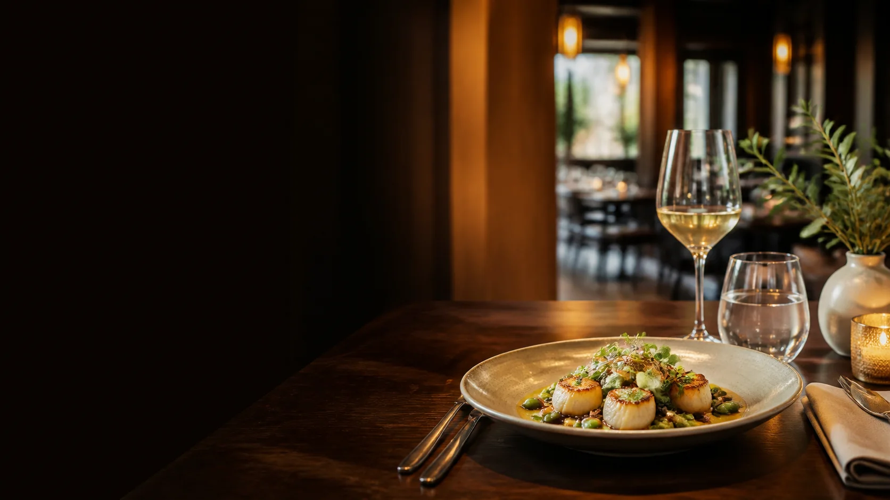

Ingredientes frescos e combinação delicada.

Cozinha contemporânea
Boa comida merece tempo.
Ingredientes da estação, técnica e hospitalidade em uma experiência autoral.
Descobrir menu“Comida para lembrar. Ambiente para voltar.”

Ingredientes da estação, técnica e hospitalidade em uma experiência autoral.
Descobrir menu“Comida para lembrar. Ambiente para voltar.”